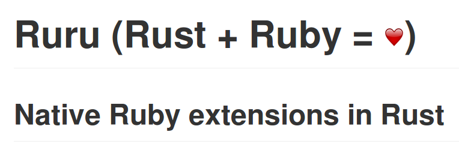
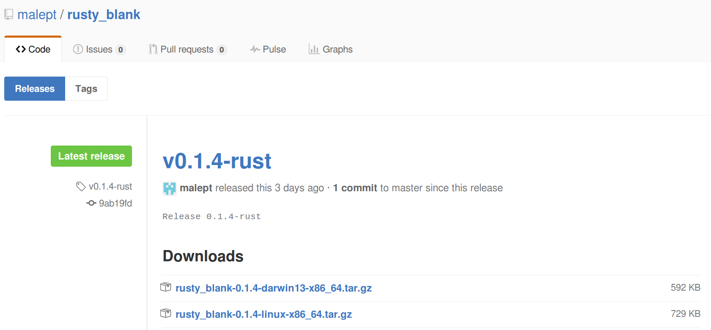

Writing Rust for Fun (& Profit?)
Episode V: The Memory Safety Strikes Back
![[Rustacean]](images/rustacean-orig-trans.png)
Presenter: Mark Lee, Pythonista, Sometimes-Rubyist, and Novice Rustacean
May 06, 2016
Today I'm going to continue with my series on why Rust is awesome and why we should use it. In particular, I'm going to address a few things that I didn't have time to talk about last time, and also some status updates.
Previously on The Rust Wing…
drumroll
![[The Rust Wing]](images/the-rust-wing.png)
In our last episode, we learned that Rust is a systems programming language, around 6 years old, with a bunch of interesting features like memory safety and a modern syntax I showed off some example code and two use cases: a speedup extension for Ruby, and a very simple webapp, both with benchmarks.
What's happened in the Rust ecosystem?
- Rust 1.8
- Dropbox article in Wired
- Rust's regex crate + C → Rust regexes in Go
Generally speaking, Rust 1.7 and then 1.8 were released in between talks. Given the project's six week release cycle, this isn't too surprising. A fair amount of the changes were related to stabilization of standard library functions.
There's been some interesting third-party news since the last talk. Dropbox finally went public with how they're using Rust: they rewrote parts of their distributed filesystem (called "Magic Pocket") from Go. Their reasons included memory usage/control, easy FFI, and code safety/correctness.
Speaking of Go, the author of the regular expression package for Rust recently wrote C bindings for it. To test them, he wrote a package that provides that regex engine to Go.
Missing Topic: Cargo
One of the topics I missed last time was on package management. Rust does have it! The manager app is called cargo, the packages are called crates, and the package index website lives at crates.io. Given that there are some prominent Rubyists working on this, it should not surprise you to learn that it is pretty similar to RubyGems and Bundler. You create a new Rust project by running cargo new (which is kind of similar to rails new), you build the project with cargo build, you update the dependencies with cargo update (which updates a .lock file), and you publish a crate with cargo publish. All very familiar commands.
Ruru
This is probably the most relevant topic. Last week, a Lithuanian developer released a crate that made it orders of magnitude easier to write Ruby extensions in Rust. This includes the ability to monkeypatch methods directly in Rust. Naturally, I jumped at the chance to stop writing C shims to get my Rust extensions to work. As I started to work on this project, there was a nagging voice in the back of my head that was saying, "Don't make everyone (including the app servers) have to download and install Rust if they don't need to!" So now I had two goals: make the Ruby gem download binary libraries if Rust isn't installed, and remove the C component of existing Rust-based extensions.
Step 1: Optional rustc
For step 1, I used the canonical example of a Rust-based Ruby extension: String.blank?.
After a few nights of experimentation, I came up with a Rake task that built the Rust library if Cargo was found, and if not, it would download the latest tagged release on GitHub for the given OS and architecture. GitHub binary releases are compiled and uploaded via Travis CI.
Step 2: De-Cification
Before
Language | files | blank | comment | code |
|---|---|---|---|---|
Ruby | 5 | 17 | 11 | 84 |
Rust | 2 | 22 | 4 | 77 |
C | 1 | 8 | 0 | 45 |
make | 1 | 9 | 1 | 24 |
SUM | 9 | 56 | 16 | 230 |
After
Language | files | blank | comment | code |
|---|---|---|---|---|
Ruby | 4 | 15 | 4 | 89 |
Rake | 1 | 8 | 1 | 89 |
Rust | 2 | 22 | 3 | 86 |
SUM | 7 | 45 | 8 | 264 |
The second step was a bit more difficult. I ported the escape_hstore extension that I talked about last time. Due to the immaturity of the ruru crate, I ended up contributing a few features, including determining the type of Ruby values. In the end, if you ignore the build system code from the previous step, I ended up with net negative, more concise code in the extension, as you can see from the lines of code counter that I ran.
Interlude
Ruby doesn't really have a "C extension API" as much as it has "please link against my internals thanks."
As an aside, in working on porting the extension to use Ruru, I was repeatedly reminded of this quote. I've hacked and/or written native extensions for three languages now, and by far, Ruby has the worst "interface". It is absolutely ridiculous a) how bad the docs are, and b) how many static functions and preprocessor macros are used. It turns out the Ruby value type code is almost all preprocessor macros, which is not FFI-friendly.
Benchmarks, Take 2
Rust 1.8, Ruby 2.3.1, Linux x86_64 (Lenovo Yoga, Intel i7-4600U @ 2.10GHz, 8GB RAM)
Rails | 0.339727 | 0.329724 | 0.327690 | 0.329705 | 0.326349 |
Rust+C | 0.215731 | 0.212838 | 0.217413 | 0.215455 | 0.214668 |
Ruru | 0.220376 | 0.218860 | 0.225751 | 0.217728 | 0.219013 |
~35% speedup, difference between Rust + C hybrid & Ruru negligible
This project gave me an opportunity to redo my extension's benchmarks. My first set were a bit problematic, primarily because I was running on a pretty old version of Ruby on my personal laptop (which happens to be the default version of Ruby on Debian stable). I redid it with the latest Rust, Ruby, and crate dependencies, and it turns out that the original benchmark was only off by ~5%. Additionally, converting to pure Rust had a negligible speed cost.